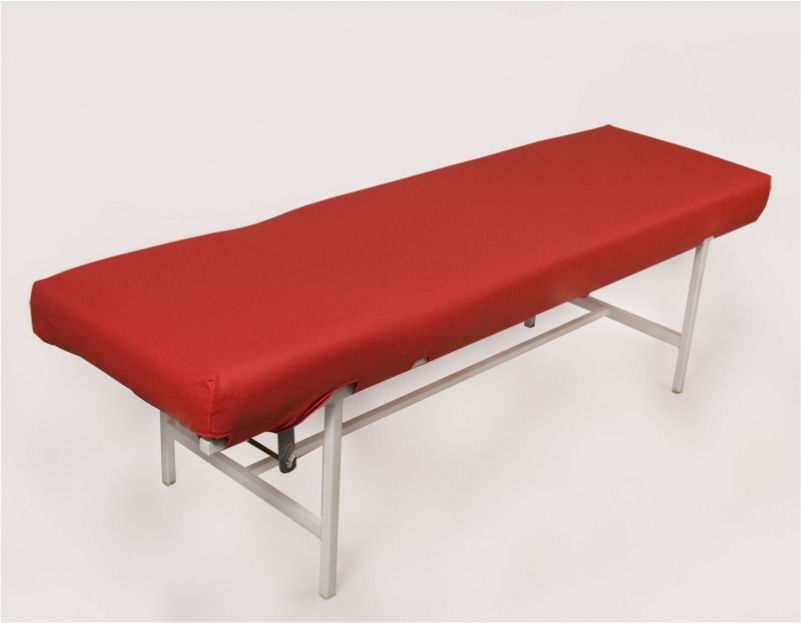

Wykonujemy usługi:

Kuśnierskie
Medycyna
Krawieckie
Tapicerskie
Rymarskie
Kaletnicze
Kuśnierskie
Medycyna
Paris is the capital of France.
Krawieckie
Paris is the capital of France.
Tapicerskie
- fotele, wypoczynki, narożniki, krzesła, pufy, sofy
- samochody osobowe, ciężarowe, maszyny rolnicze, tiry, sprzęt budowlany, (koparki, walce, ciągniki,)
- kłady, motory,
- łodzie, jachty , naprawa żagli
- Wykonujemy nowe pokrowce z kożucha lub połączenie kożucha z skórą licową dopasowane i profilowane z możliwością demontażu celem wyczyszczenia
- tapicerka meblowa hoteli, restauracji, gabinetów, hal, szkół, miejsc użyteczności publicznej, itp.
Rymarz
Paris is the capital of France.
Kaletnik
Paris is the capital of France.